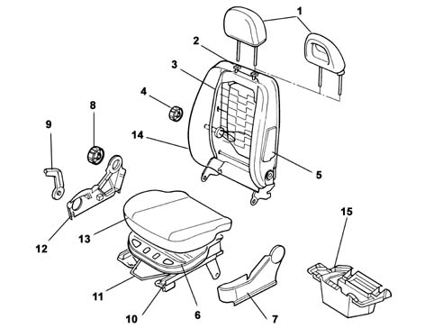
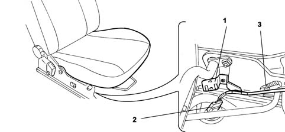

Introduction - FRONT SEATS
- Path
- Descriptions > 70 FITTINGS > 7045 FRONT SEATS > Introduction - FRONT SEATS
- Kind
- system description
- Applies to
- all engines; all production periods
- Interactive page
- https://sloeber94.github.io/elrnDB-fPnd/en/#/2753493
Applies to: all engines; all production periods
The front seats have been designed to optimize comfort and safety and ensure maximum driving comfort, ideal lateral containment properties and lumbar support.
The base structure is fastened to the seat lift unit and is made out of pressed steel with an antisubmarining ridge. This prevents the occupant from sliding under the lap part of the seat belt if the car decelerates abruptly.
The squab frame is made out of a pressed steel structure that improves energy absorption in the case of rear impact. This is anchored to the seat lift unit by means of a bilateral joint.
On two-door versions, the squab can be tilted by means of the release handle, which allows the seat to tilt and glide forward in a single manoeuvre. Subsquent repositioning is aided by a memory mechanism in the slide guides. This allows the seat to be restored to its initial position automatically.
Squab rake may be adjusted by turning a knob on the inside near the joint, while the lumbar adjustment control is halfway along the squab, also on the inside.
The squab supports a height-adjustable head restraint. This can be moved through a travel of about 50 mm by means of a release button located on the right side of the head restraint.
The seat lift unit consists of a steel frame that includes the lift mechanism. The slide guides are secured to the lift mechanism, cushion and squab. The seat belt branch (fitted with the fastening sensor on the driver's seat) is secured to the inner side of the seat lift unit.
Driver's seat reach may be adjusted through a travel of 230 mm along angled guides. Seat ride may be adjusted through a travel of 60 mm by means of a new type of mechanism that moves the seat in an arc (a maximum height movement corresponds to a horizontal forward movement of about 50 mm). This mechanism is operated by a ratchet lever.
The passenger's seat comprises a removable trinket compartment, in the bottom.
Applies to: all engines; all production periods
Structure of the front seat

1 - Head restraint 2 - Head restraint bushes 3 - Squab frame 4 - Lumbar adjustment knob 5 - Side bag 6 - Cushion base 7 - Outer guard 8 - Squab adjustment knob 9 - Seat heat adjustment lever 10 - Guides 11 - Seat slide control lever 12 - Inner guard 13 - Cushion cover 14 - Squab cover 15 - Trinket compartment (under passenger's seat)
Applies to: all engines; all production periods
The connecting cables for the Side Bag module and seat belt fastened sensor (for the driver's side only) are anchored to the seat structure by bands and covered by a protective coating.
View of connector carrier bracket

1 - Connector carrier bracket 2 - Electrical connectors 3 - Anchorage clip
Applies to: all engines; all production periods
Wording on the outside of the squab warns of the presence of an air bag beneath the trim [PR5580].
If the air bag module, cable and seat trim are replaced, the new parts come with registration plates which should be detached and stuck on the seat base so that they can be easily read.